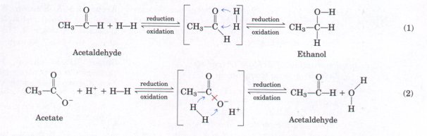
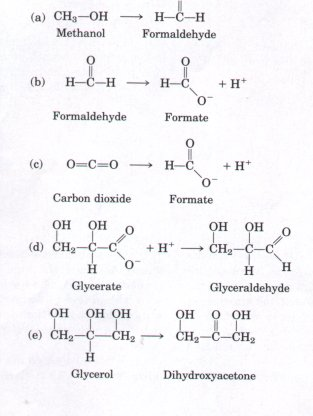
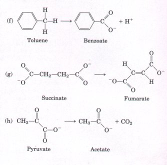
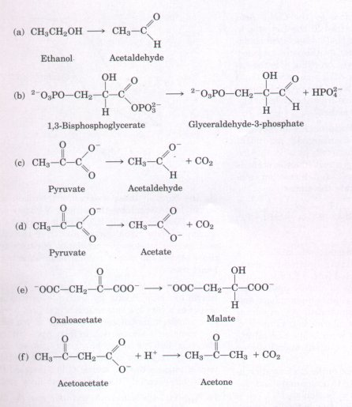
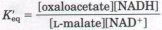
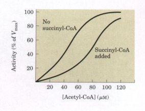

Cellular respiration occurs in three stages: (1) the oxidative formation of acetyl-CoA from pyruvate, fatty acids, and some amino acids, (2) the degradation of acetyl residues by the citric acid cycle to yield CO2 and electrons, and (3) the transfer of electrons to molecular oxygen, coupled to the phosphorylation of ADP to ATP. The oxidative catabolism of glucose yields much more energy than the fermentation pathways.
Pyruvate, the end product of glycolysis, undergoes dehydrogenation and decarboxylation by the pyruvate dehydrogenase complex, which contains three sequentially acting enzymes and requires five coenzymes, to yield acetyl-CoA and CO2. The acetyl-CoA enters the citric acid cycle, which occurs in the mitochondria of eukaryotes and in the cytosol of prokaryotes. Citrate synthase catalyzes the condensation of acetyl-CoA with oxaloacetate to form citrate. Aconitase catalyzes the reversible formation of isocitrate from citrate; isocitrate is then oxidized to α-ketoglutarate by isocitrate dehydrogenase in a reaction that also yields CO2. The α-ketoglutarate undergoes another dehydrogenation and decarboxylation to succinyl-CoA and CO2. Succinyl-CoA reacts with ADP (or GDP) and Pi to form free succinate and ATP (or GTP), in a substrate-level phosphorylation. The succinate is then oxidized to fumarate by succinate dehydrogenase, an FAD-linked enzyme that is part of the inner membrane of the mitochondrion (or of the plasma membrane in bacteria). Fumarate is reversibly hydrated by fumarase to L-malate, which is oxidized by NAD-linked L-malate dehydrogenase to regenerate a molecule of oxaloacetate. The latter can now combine with another molecule of acetylCoA and start another turn of the cycle.
Isotopic tracer experiments with carbon-labeled fuel molecules or intermediates have established that the citric acid cycle is the major pathway of carbohydrate oxidation in aerobic cells. The pyruvate dehydrogenase complex of vertebrates is inhibited by the allosteric effectors NADH, ATP, and acetyl-CoA. The enzyme complex is also inhibited by reversible phosphorylation catalyzed by a protein kinase and phosphatase that are part of the complex. The overall rate of the cycle is controlled by the rate of conversion of pyruvate to acetyl-CoA and by the flux through three enzymes of the cycle: citrate synthase, isocitrate dehydrogenase, and α-ketoglutarate dehydrogenase. These fluxes are largely determined by the concentrations of substrates and products; the end products ATP and NADH are inhibitory.
Citric acid cycle intermediates are also used as precursors in biosynthesis of amino acids and other biomolecules. The cycle intermediates are then replenished by anaplerotic reactions catalyzed by pyruvate carboxylase, PEP carboxykinase, PEP carboxylase, or malic enzyme. In the germinating seeds of some plants, and in certain microorganisms that can live on acetate as sole carbon source for the synthesis of carbohydrate, a variation of the citric acid cycle, the glyoxylate cycle, comes into play. The process involves two additional enzymes: isocitrate lyase and malate synthase, located within glyoxysomes. This cycle makes possible the net formation of succinate, oxaloacetate, and other cycle intermediates from acetyl-CoA. Oxaloacetate thus formed can be used to synthesize glucose via gluconeogenesis. Vertebrates lack the glyoxylate cycle and cannot synthesize glucose from acetate. In organisms with both the citric acid cycle and the glyoxylate cycle, the partitioning of isocitrate between the two pathways is controlled at the level of isocitrate dehydrogenase. This enzyme is subject to regulation by reversible phosphorylation.
General
Gottschalk, G. (1986) Bacterial Metabolism, 2nd edn, Springer-Verlag, New York.
An excellent account of the metabolic diversity of bacteria and the richness of their energy-generating pathways.
Kay, J. & Weitzman, P.D.J. (eds) (1987) Krebs' Citric Acid Cycle: Half a Century and Still Turning, Biochemical Society Symposium 54, The Biochemical Society, London.
A multiauthor book on the citric acid cycle, including molecular genetics, regulatory mechanisms, variations on the cycle in microorganisms from unusual ecological niches, and evolution of the pathway. Especially relevant are the chapters by H. Gest (Evolutionary roots of the citric acid cycle in proharyotes), W.H. Holms (Control of flux through the citric acid cycle and the glyoxylate bypass in Escherichia coli), and R.N. Perham et al. (a-Keto acid dehydrogenase complexes).
Production of Acetate (Pyruvate Dehydrogenase Complex)
Patel, M.S. & Roche, T.E. (1990) Molecular biology and biochemistry of pyruvate dehydrogenase complexes. FASEB J. 4, 3224-3233.
Recent results from the cloning of the enzymes of the complex are described, and the enzymes from a number of species are compared in composition, structure, and action. The protein X of vertebrate pyruvate dehydrogenase is included in this excellent review.
Reed, L.J. & Hackert, M.L. (1990) Structurefunction relationships in dihydrolipoamide acyltransferases. J. Biol. Chem. 265, 8971-8974.
A short, clear revlew of the structure of the dihydrolipoyl transacetylase of both the pyruvate dehydrogenase complex and a-ketoglutarate dehydrogenase, including a comparison of the structures of bacterial, yeast, and human uersions of the protein.
Roche, T.E. & Patel, M.S. (eds) (1990) Alpha-Keto Acid Dehydrogenase Complexes: Organization, Regulation, and Biomedical Ramifications. Ann. N.Y. Acad. Sci. 573.
This volume contains about 60 papers covering all aspects of the enzyme group that includes the pyruuate dehydrogenase complex and a-hetoglutarate dehydrogenase.
Citric Acid Cycle Enzymes
Knowles, J. (1989) The mechanism of biotindependent enzymes. Annu. Reu. Biochem. 58, 195221.
Krebs, H.A. & Johnson, W.A. (1937) The role of citric acid in intermediate metabolism in animal tissues. Enzymologia 4, 148-156.
One of the classic papers on the citric acid cycle.
Singer, T.P. & Johnson, M.K. (1985) The prosthetic groups of succinate dehydrogenase: 30 years from discovery to identification. FEBS Lett. 190, 189-198.
A description of the structure and role of the ironsulfur centers in this enzyme.
Weigand, G. & Remington, S.J. (1986) Citrate synthase: structure, control, and mechanism. Annu. Rev. Biophys. Biophys. Chem. 15, 97-117.
Regulation of the Citric Acid Cycle
Hansford, R.G. (1980) Control of mitochondrial substrate oxidation. Curr. Top. Bioenerget. 10, 217278.
A detailed review of the regulation of the citric acid cycle.
Kaplan, N.O. (1985) The role of pyridine nucleotides in regulating cellular metabolism. Curr. Top. Cell. Regul. 26, 371-381.
An excellentgeneral discussion of the importance of the (NADHJl(NAD+) ratio in cellular regulation.
Reed, L.J., Damuni, Z., & Merryfield, M.L. (1985) Regulation of mammalian pyruvate and branchedchain a-keto acid dehydrogenase complexes by phosphorylation-dephosphorylation. Curr. Top. Cell. Regul. 27, 41-49.
Glyoxylate Cycle
Holms, W.H. (1986) The central metabolic pathways of Escherichia coli: relationship between flux and control at a branch point, efficiency of conversion to biomass, and excretion of acetate. Curr. Top. Cell. Regul. 28, 69-106.
1. Balance Sheet for the Citric Acid Cycle The citric acid cycle uses eight enzymes to catabolize acetyl-CoA: citrate synthase, aconitase, isocitrate dehydrogenase, α-ketoglutarate dehydrogenase, succinyl-CoA synthetase, succinate dehydrogenase, fumarase, and malate dehydrogenase.
(a) Write a balanced equation for the reaction catalyzed by each enzyme.
(b) What cofactor(s) are required by each enzyme reaction?
(c) For each enzyme determine which of the following describes the type of reaction catalyzed: condensation (carbon-carbon bond formation); dehydration (loss of water); hydration (addition of water); decarboxylation (loss of CO2); oxidationreduction; substrate-level phosphorylation; isomerization.
(d) Write a balanced net equation for the catabolism of acetyl-CoA to CO2.

2. Recognizing Oxidation and Reduction Reactions in Metabolism The biochemical strategy of living organisms is the stepwise oxidation of organic compounds to carbon dioxide and water. By properly coupling these reactions, a major part of the energy produced in oxidation is conserved in the form of ATP. It is important to be able to recognize oxidation-reduction processes in metabolism. The reduction of an organic molecule results from the hydrogenation of a double bond (Eqn 1 above) or of a single bond with accompanying cleavage (Eqn 2). Conversely, the oxidation of an organic molecule results from dehydrogenation. In biochemical redox reactions (see Problem 3) the coenzymes NAD and FAD function to dehydrogenate/hydrogenate organic molecules in the presence of the proper enzymes.
For each of the following metabolic transformations, determine whether oxidation or reduction has occurred. Balance each transformation by inserting H-H, and H2O where necessary.


3.Nicotinamide Coenzymes as Reversible Redox Carriers The nicotinamide coenzymes (see Fig. 13-16) can undergo reversible oxidation-reduction reactions with specific substrates in the presence of the appropriate dehydrogenase. The nicotinamide ring is the portion of the coenzyme involved in the redox reaction; the remaining portion of the coenzyme serves as a binding group recognized by the dehydrogenase protein. Formally, NADH + H+ serves as the hydrogen source (H-H), as described in Problem 2. Whenever the coenzyme is oxidized, a substrate must be simultaneously reduced:
Substrate |
+ NADH + H+ |
|
product |
+ NAD+ |
Oxidized |
Reduced |
|
Reduced |
Oxidized |
For each of the following reactions, determine whether the substrate has been oxidized or reduced or is unchanged in oxidation state (see Problem 2). For substrates that have undergone a redox change, balance the reaction with the necessary amount of NAD+, NADH, H+, and H2O. The objective is to recognize when a redox coenzyme is necessary in a metabolic reaction.

4. Stimulation of Oxygen Consumption by Oxaloacetate and Malate In the early 1930s, Albert SzentGyorgyi reported the interesting observation that the addition of small amounts of oxaloacetate or malate to suspensions of minced pigeon-breast muscle stimulated the oxygen consumption of the preparation. Surprisingly, when the amount of oxygen consumed was measured, it was about seven times more than the amount necessary to oxidize the added oxaloacetate or malate completely to carbon dioxide and water.
(a) Why does the addition of oxaloacetate or malate stimulate oxygen consumption?
(b) Why is the amount of oxygen consumed so much greater than the amount necessary to oxidize the added oxaloacetate or malate completely?
5. The Number of Molecules of Oxaloacetate in a Mitochondrion In the last reaction of the citric acid cycle, malate is dehydrogenated to regenerate the oxaloacetate necessary for the entry of acetylCoA via the citrate synthase reaction:
L-Malate + NAD+  oxaloacetate + NADH +
H+ ΔG°' = 30 kJ/mol
oxaloacetate + NADH +
H+ ΔG°' = 30 kJ/mol
(a) Calculate the equilibrium constant for the reaction at 25 °C
(b) Because ΔG°' assumes a standard pH of 7, the equilibrium constant obtained in (a) corresponds to
The measured concentration of L-malate in rat liver mitochondria is about 0.20 mM when [NAD+]/ [NADH] is 10. Calculate the concentration of oxaloacetate at pH 7 in these mitochondria.
(c) Rat liver mitochondria are roughly spherical, with a diameter of about 2 μm. To appreciate the magnitude of the oxaloacetate concentration in mitochondria, calculate the number of oxaloacetate molecules in a single rat liver mitochondrion.
6. Respiration Studies in Isolated Mitochondria Cellular respiration can be studied using isolated mitochondria and measuring their oxygen consumption under different conditions. If 0.01 M sodium malonate is added to actively respiring mitochondria using pyruvate as a fuel source, respiration soon stops and a metabolic intermediate accumulates.
(a) What is the structure of the accumulated intermediate?
(b) Explain why it accumulates.
(c) Explain why oxygen consumption stops.
(d) Aside from removing malonate, how can the inhibition of respiration by malonate be overcome? Explain.
7. Labeling Studies in Isol~ted Mitochondria The metabolic pathways of organic compounds have often been delineated by using a radioactively labeled substrate and following the fate of the label.
(a) How can you determine whether glucose added to a suspension of isolated mitochondria is metabolized to CO2 and H2O?
(b) Suppose you add [3-14C]pyruvate (labeled in the methyl position) to the mitochondria. After one turn of the citric acid cycle, what is the location of the 14C in the oxaloacetate? Explain by tracing the 14C label through the pathway.
(c) How many turns of the citric acid cycle must the 14C go through before all the isotope is released as 14CO2? Explain.
8. (1-I4C)Glucose Catabolism If an actively respiring bacterial culture is briefly incubated with [1-14C]glucose and the glycolytic and citric acid cycle intermediates are isolated, where is the 14C in each of the intermediates listed below? Consider only the initial incorporation of 14C into these molecules, in the first pass of labeled glucose through the pathways.
(a) Fructose-1,6-bisphosphate
(b) Glyceraldehyde-3-phosphate
(c) Phosphoenolpyruvate
(d) Acetyl-CoA
(e) Citrate
(f) α-Ketoglutarate
(g) Oxaloacetate
9. Synthesis of Oxaloacetate by the Citric Acid Cycle Oxaloacetate is formed in the last step of the citric acid cycle by the NAD+-dependent oxidation of L-malate. Can a net synthesis of oxaloacetate take place from acetyl-CoA using only the enzymes and cofactors of the citric acid cycle, without depleting the intermediates of the cycle? Explain. How is the oxaloacetate lost from the cycle (to biosynthetic reactions) replenished?
10. Mode ofAction of the Rodenticide Fluoroacetate Fluoroacetate, prepared commercially for rodent control, is also produced naturally by a South African plant. After entering a cell, fluoroacetate is converted into fluoroacetyl-CoA in a reaction catalyzed by the enzyme acetate thiokinase:
| F-CH2COO- + CoA-SH + ATP F-CH2 |
C | -S-CoA + AMP + PPi |
|| |
The toxic effect of fluoroacetate was studied in a metabolic experiment on intact isolated rat heart. After the heart was perfused with 0.22 mM fluoroacetate, the measured rate of glucose uptake and glycolysis decreased and glucose-6-phosphate and fructose-6-phosphate accumulated. An examination of the citric acid cycle intermediates indicated that their concentrations were below normal except for citrate, which had a concentration 10 times higher than normal.
(a) Where does the block in the citric acid cycle occur? What causes citrate to accumulate and the other cycle intermediates to be depleted?
(b) Fluoroacetyl-CoA is enzymatically transformed in the citric acid cycle. What is the structure of the metabolic end product of fluoroacetate? Why does it block the citric acid cycle? How might the inhibition be overcome?
(c) Why do glucose uptake and glycolysis decrease in the heart upon fluoroacetate perfusion? Why do hexose monophosphates accumulate?
(d) Why is fluoroacetate poisoning fatal?
11. Net Synthesis of α-Ketoglutarate α-Ketoglutarate plays a central role in the biosynthesis of several amino acids. Write a series of known enzymatic reactions that result in the net synthesis of α-ketoglutarate from pyruvate. Your proposed sequence must not involve the net consumption of other citric acid cycle intermediates. Write the overall reaction for your proposed sequence and identify the source of each reactant.
12. Regulation of Citrate Synthase In the presence of saturating amounts of oxaloacetate, the activity of citrate synthase from pig heart tissue shows a sigmoid dependence on the concentration of acetylCoA, as shown below. When succinyl-CoA is added, the curve shifts to the right and becomes even more sigmoid.

On the basis of these observations, explain how succinyl-CoA regulates the activity of citrate synthase (Hint: See Fig. 8-27). Why is succinyl-CoA an appropriate signal for regulation of the citric acid cycle? How does the regulation of citrate synthase control the rate of cellular respiration in pig heart tissue?
13. Regulation of Pyruuate Carboxylase The carboxylation of pyruvate by pyruvate carboxylase occurs at a very low rate unless acetyl-CoA, a positive allosteric modulator, is present. If you have just completed a meal rich in fatty acids (triacylglycerols) but low in carbohydrates (glucose), how does this regulatory property shut down the oxidation of glucose to CO2 and H2O but increase the oxidation of acetyl-CoA derived from fatty acids?
14. Relationship between Respiration and the Citric Acid Cycle Although oxygen does not participate directly in the citric acid cycle, the cycle operates only when O2 is present. Why?
15. Thermodynamics of Citrate Synthase Reaction In Vivo Citrate is formed by the citrate synthasecatalyzed condensation of acetyl-CoA with oxaloacetate:
Oxaloacetate + acetyl-CoA + H2O citrate
+ CoA + H+
In rat heart mitochondria at pH 7.0 and 25 °C, the concentrations of reactants and products are: oxaloacetate, 1 μM; acetyl-CoA, 1 μM; citrate, 220 μM; and CoA, 65 μM. On the basis of these concentrations and the value of the standard free-energy change for the citrate synthase reaction (-32.2 kJ/ mol), determine the direction of metabolite flow through the citrate synthase reaction in the cell. Explain.
16. Reactions of the Pyruvate Dehydrogenase Complex ltwo of the steps in the oxidative decarboxylation of pyruvate (steps 4 and 5 , Fig. 15-6) do not involve any of the three carbons of pyruvate yet are essential to the operation of the pyruvate dehydrogenase complex. Explain.